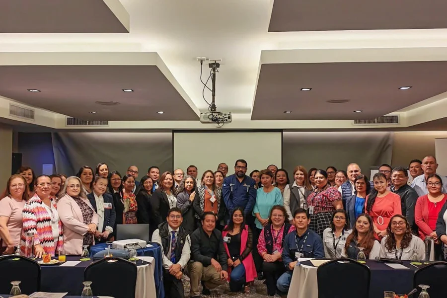
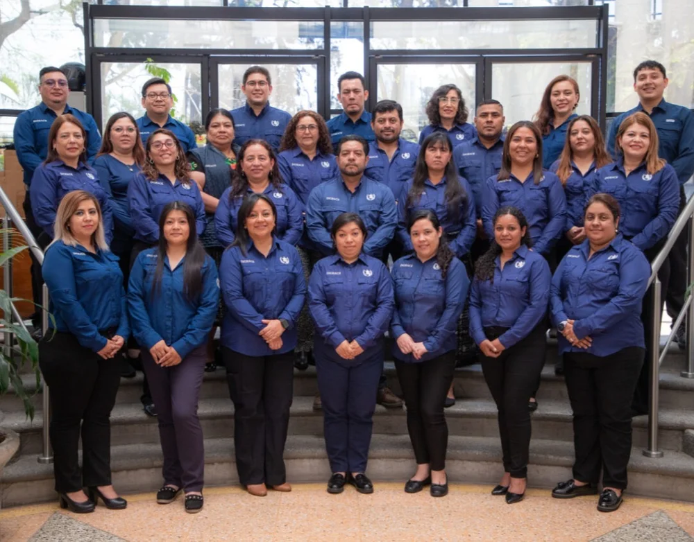
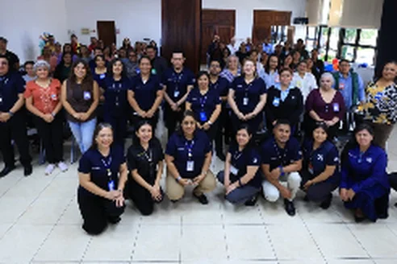
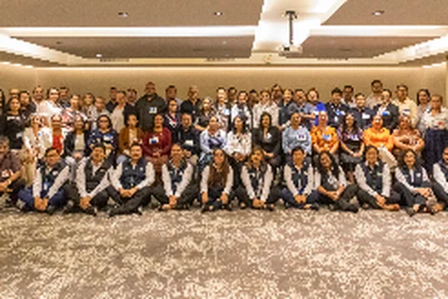
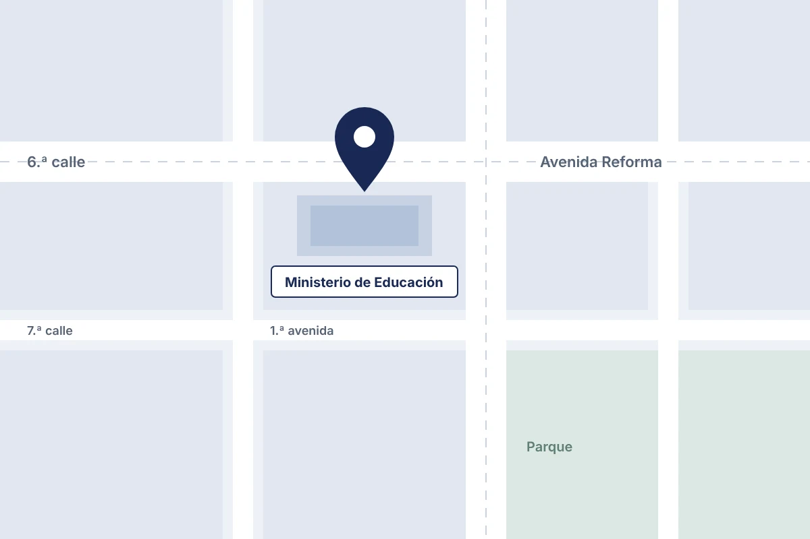

Dirección General de Acreditación y Certificación
Requisitos y pasos para acreditar, certificar y tramitar títulos y diplomas del sistema educativo.
Más solicitados: Reposición de títulos Equivalencias Equiparaciones Papelería de fin de ciclo

Trámites
23 trámites
No encontramos trámites con ese nombre. Pruebe con otra palabra o .
Para personas
6
-
Reposición de títulos y diplomas
Si perdió o dañó su título o diploma, o necesita corregir o cambiar su nombre.
Ver requisitos -
Primera impresión de títulos y diplomas
Para obtener el título o diploma de Educación Media al finalizar el ciclo escolar.
Ver requisitos -
Equiparaciones de estudios
Reconocimiento de estudios hechos en el extranjero para continuar en el sistema nacional.
Ver requisitos -
Equivalencias de estudios
Para comparar planes de estudio dentro del sistema nacional.
Ver requisitos -
Acreditación de competencias docentes: profesionales que imparten Seminario
Reconoce la experiencia y las competencias de quienes imparten Seminario.
Ver requisitos -
Acreditación de competencias docentes: tutores de modalidad virtual a distancia
Acredita las competencias pedagógicas y técnicas de tutores de educación virtual.
Ver requisitos
Para centros educativos
10
-
Registro y codificación de instituciones educativas
Creación, actualización, reapertura y cierre de códigos de centros, academias y CAT.
Ver requisitos -
Papelería de fin de ciclo
Revisión de formatos y registro de los resultados finales del Sistema Educativo Nacional.
Ver requisitos -
PEI de centros educativos públicos, privados y por cooperativa
Lineamientos para elaborar, entregar e implementar el PEI en modalidad presencial.
Ver requisitos -
PEI para centros privados con educación virtual a distancia
Lineamientos del PEI para centros privados con entrega educativa virtual.
Ver requisitos -
PEI para entidades de abrigo del Consejo Nacional de Adopciones
Elaboración e implementación del PEI de hogares de abrigo, como parte de su autorización.
Ver requisitos -
Entrega educativa virtual a distancia para centros privados
Orientaciones y documentos para los trámites de centros privados con entrega virtual.
Ver requisitos -
Trámites de centros educativos privados
Orientaciones y documentos para las gestiones de los centros educativos privados.
Ver requisitos -
Trámites de centros educativos públicos
Orientaciones y documentos para las gestiones de los centros educativos públicos.
Ver requisitos -
Trámites de institutos por cooperativa
Trámites de los Institutos de Educación por Cooperativa de Enseñanza.
Ver requisitos -
Creación de escuelas e institutos normales con especialidades
Base legal, instructivos y formularios para cada sector autorizado.
Ver requisitos
Para instituciones de cursos libres
4
-
Acreditación de instituciones de cursos libres
Reconocimiento de la competencia técnica de la institución para su quehacer educativo.
Ver requisitos -
Certificación de instituciones de cursos libres
Con el PEI aprobado, la institución puede solicitar su certificación oficial por dos años.
Ver requisitos -
Aprobación del PEI para cursos libres
Para certificarse y acreditarse, la institución debe presentar su PEI.
Ver requisitos -
Ampliación de la certificación o recertificación (R1 y R2)
Amplía la vigencia por cinco años o incorpora nuevos cursos a una certificación vigente.
Ver requisitos
Programas, proyectos y materiales
3
-
Acreditación y certificación de programas y proyectos educativos
Para programas y proyectos de instituciones que prestan servicios educativos (ISES).
Ver requisitos -
Ampliación de la acreditación de programas y proyectos educativos
Para ampliar la acreditación y certificación de programas y proyectos ya acreditados.
Ver requisitos -
Acreditación y certificación de textos escolares, materiales educativos y medios audiovisuales
Para materiales elaborados por el Ministerio, otras entidades gubernamentales y ONG.
Ver requisitos
Comunicados y noticias
Ver todas las noticias-
-

-

Quiénes somos
DIGEACE es la dependencia del Ministerio de Educación responsable de acreditar y certificar oficialmente los procesos educativos institucionales e individuales, para asegurar la calidad educativa.
Conozca nuestra estructuraProcesos institucionales
Dirección de Acreditación y Certificación de Procesos Institucionales
- Instituciones que prestan servicios educativos
- Procesos institucionales y programas especiales
- Procesos extraescolares
Procesos individuales
Dirección de Acreditación y Certificación de Procesos Individuales
- Procesos individuales
- Textos, materiales educativos y medios audiovisuales
Atención al público
- Dirección
- 6 calle 1-87, zona 10, Edificio 2, 4.º nivel, ala sur. Ministerio de Educación, Guatemala.
- Horario
- Lunes a viernes, de 8:00 a 16:00
- Teléfono
- (502) 2411-8900
- Correo
- atencion.digeace@mineduc.gob.gt
